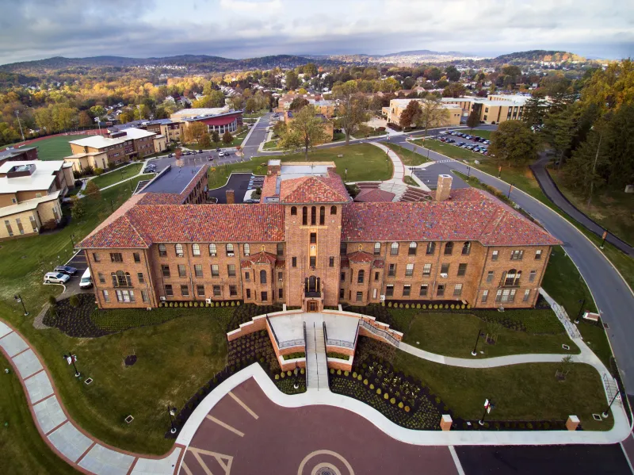
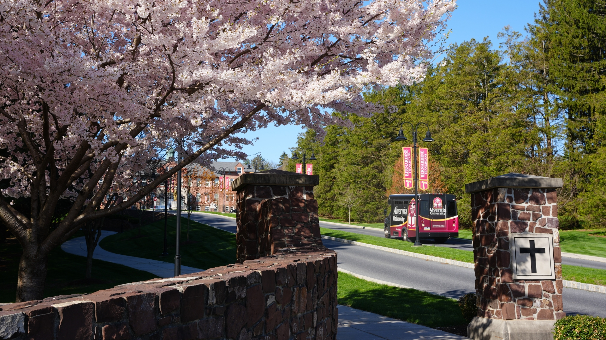
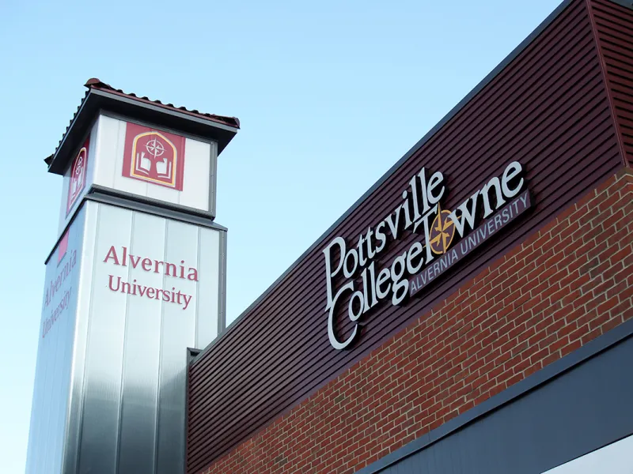
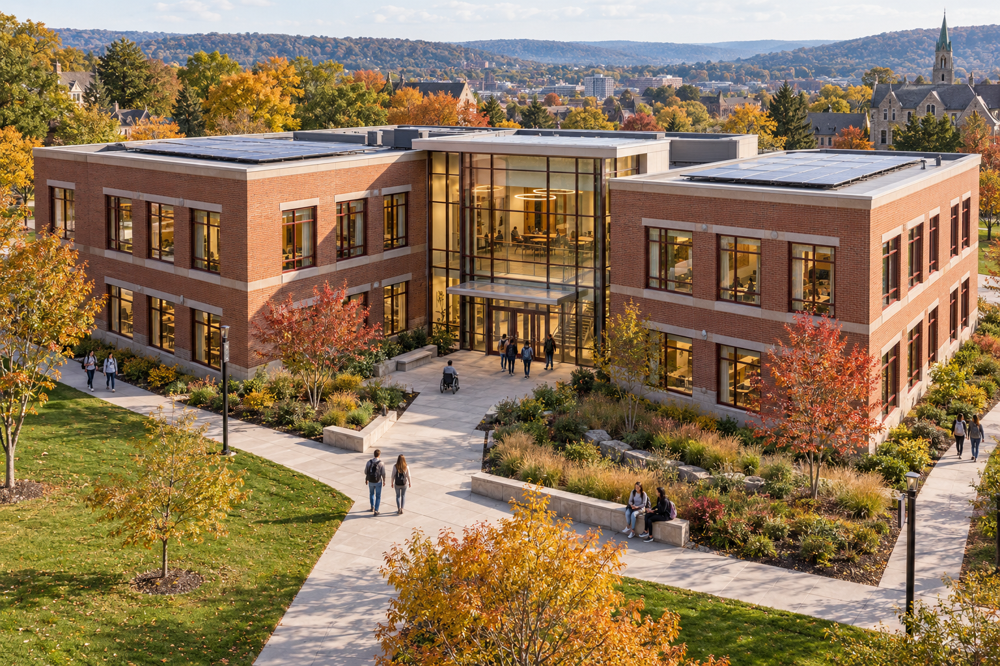

READING, PENNSYLVANIA

ALVERNIA · CONNECTED BY COMMUNITY
Explore our campuses. Discover what helps.
Imagine what comes next.
ONE COMMUNITY. MANY POSSIBILITIES.
It’s the people, spaces, and support that help you move forward. Start with Alvernia’s locations, then make this explorer your own.
Your mission: add five resources →

FIND WHAT HELPS YOU THRIVE
Load the interactive map to explore Alvernia locations.
Basic map needs no token. Connect your own Cesium ion account for photorealistic 3D.
IMAGINE THE NEXT CHAPTER
Design a proposed AI Center.
Start with an image. Explore a 3D model.
Place your idea on the Hill Campus map.

Drag to orbit · scroll to zoom · needs WebGL
AI-generated illustration + separately built example 3D model. This is a design exercise, not an existing or approved campus building.
The starter includes a concept image and a simple GLB model. Replace both with your own work.
Uploads stay in this page session. Use project files to publish them.
Default: a hypothetical placement near Hill Campus. Inspect the scene and choose a sensible location; this is not a site survey.
A single image does not define hidden sides or true dimensions. This website displays the model you supply; it does not automatically reconstruct one.
AI 101 · YOUR CAMPUS EXPLORER CHALLENGE
Add your Cesium token. Visit each campus and distinguish active locations, planned locations, and partners. Compare the 2D map and photorealistic view.
Choose services that help students. Record a source, coordinates, date checked, and access notes for each. Verify AI suggestions before publishing.
Create an AI Center concept, add its GLB model, and ask a coding agent to improve one feature. Test the change with a classmate.
Open the design studio →WORK WITH YOUR CODING AGENT
Use the project’s AGENTS.md and a small task in TASK.md. Ask for one feature, inspect the result, then test.
Browser changes belong to this device. Export them, then add them to your GitHub project for everyone to see.
index.html is at the repository root.config.js. Local browser edits do not update GitHub.